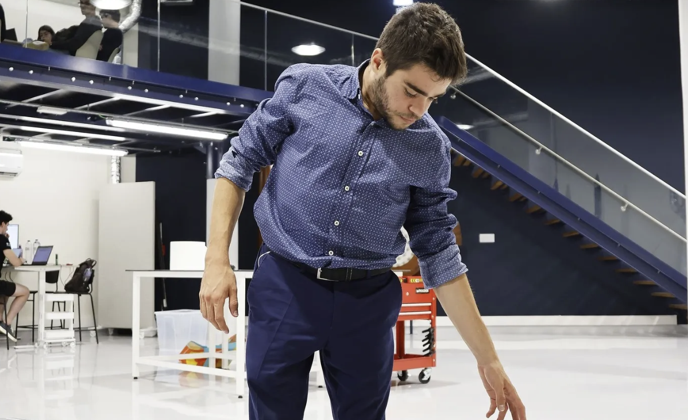

Artigo
Sobre Mim
Olá! O meu nome é Alexandre Couto, tenho 24 anos, sou de Santo Tirso, atleta de Natação Adaptada do Sporting Clube de Portugal e da Seleção Nacional, e estudante de Engenharia Aeroespacial no Instituto Superior Técnico. Convivo com uma condição rara chamada síndrome de Morquio tipo B, que afeta principalmente a estrutura óssea e muscular. Foi por recomendação médica que entrei na natação ainda em criança — e foi dentro de água que descobri um lugar seguro, libertador e transformador. Comecei na Piscina Municipal de Santo Tirso e, por volta dos 10 anos, entrei para a equipa do Ginásio Clube de Santo Tirso, competindo inicialmente na natação pura. Mais tarde, e por não poder competir como uma criança “dita normal”, afastei-me temporariamente da modalidade, mas o regresso à água — agora na natação adaptada — reacendeu a minha paixão. Desde 2021, represento o Sporting Clube de Portugal, onde comecei a competir a nível nacional com regularidade e sucesso. Tenho crescido no panorama nacional, conquistando tudo o que havia para conquistar nas minhas classes. Sou tetracampeão nacional (então na classe S9), com vitórias nos 50m, 100m e 400m livres, além dos 100m costas, para além de mais dois títulos nacionais alcançados no ano anterior e vários títulos coletivos. Tenho também o orgulho de ser recordista nacional nos 400m estilos, uma das provas mais exigentes. Atualmente, compito nas classes S8, SB7 e SM8. Em abril de 2025, dei um dos passos mais importantes da minha carreira ao representar Portugal pela primeira vez numa prova internacional: o World Para Swimming Series Fuji–Shizuoka, no Japão. Foi o início do meu percurso no panorama internacional, depois de ter crescido e consolidado o meu caminho a nível nacional. Antes da competição, realizei também uma classificação desportiva internacional, essencial para definir oficialmente a minha classe no panorama mundial. A natação adaptada não é só desporto — é uma escola de vida. Através dela, cresci como atleta e como pessoa, ao lado de colegas que me ensinaram que o limite, muitas vezes, somos nós que o impomos. Partilhar piscina com atletas surdos ensinou-me Língua Gestual Portuguesa; conviver com colegas com síndrome de Down mostrou-me o poder da superação e da autenticidade. Paralelamente, estudo no Técnico, onde aplico diariamente a mesma dedicação e resiliência. Tanto na engenharia como no desporto, é preciso estudar, experimentar e melhorar constantemente. Até conceitos como o escoamento da água, que aprendo no curso, são úteis quando estou a aperfeiçoar a minha técnica na piscina. Nem sempre é fácil conciliar tudo, mas tenho tido o apoio de professores e amigos que fazem a diferença — desde uma compreensão nas avaliações até um simples gesto de carregar a mochila nos dias difíceis. A minha mensagem para quem está a começar, seja no desporto ou noutra paixão, é simples: arrisquem, mesmo com medo. Se algo vos faz bem, então sigam em frente. Os desafios existem, mas também existem formas de os ultrapassar. O importante é nunca desistir. Gostava também de agradecer muito aos meus pais, à minha irmã e aos meus avós, que sempre estiveram lá para mim. Sempre foram o meu porto seguro. Acrescento ainda o meu treinador, Rui Gama, que acima de resultados vê pessoas e é um dos meus pilares de vida. Agradeço também a todo o meu staff, em especial a um dos meus preparadores físicos, o João Carvalho, que, tal como o Rui, está comigo desde o princípio. Para terminar, costumo dizer que, se me dessem a escolher nascer com o meu problema ou nascer “normal”, escolheria sempre o caminho que tive e a luta que tenho — aprendi tanto! Sinto, verdadeiramente, que no desporto convencional nascem heróis, pelo esforço, dedicação e tudo o que é realmente necessário para levar o corpo aos limites — mas é no desporto adaptado que aparecem heróis que já nada têm a provar… e ainda assim fazem mais e mais.